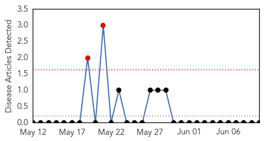

Yellow Fever
30-Day Web Trend
2 alerts, 0 warnings

30-Day Twitter Trend
0 alerts, 0 warnings

Article Locations


Article Confidences

Top Articles:
-
No articles found for Jun 10, 2015
Top Tweets:
-
No tweets found for Jun 10, 2015
Ebola
30-Day Web Trend
30-Day Twitter Trend
Article Locations

Article Confidences

Top Articles:
- 1.000
- Ebola progress stalls in Guinea and Sierra Leone
- 1.000
- MERS outbreak in South Korea holds lessons for U.S.
- 1.000
- After Ebola, India Faces Threat Of MERS Virus
- 1.000
- 4 lessons from Ebola wars: Our view
- 0.999
- Communication is key in halting disease’s spread: U.S. doctor-INSIDE Korea JoongAng Daily
- 0.998
- Government of Canada strengthens Ebola preparedness for Canadians
- 0.997
- Liberia still cautious one month into being declared free of Ebola transmission
- 0.997
- Potential MERS victims leave quarantine
- 0.996
- Ebola: MSF expands activities in Mali
- 0.995
- Hospital clears traveler who was monitored for possible Ebola
- 0.995
- Meet the Most Powerful Doctor in America
- 0.992
- Ebola: MSF Ebola Transit Unit to support safe reopening of Monrovia hospital
- 0.990
- Officials track path of traveler with drug-resistant TB
- 0.987
- Italian nurse cured of Ebola
- 0.986
- African American newspaper, Washington D.C.
- 0.985
- No Ghanaian should be a guinea pig for Ebola experiments -
- 0.979
- Americans And FDA Officials In Support Of Ebola Vaccine Trial Should First Be Tested - Kwame Akuffo
- 0.976
- Italian nurse cured of Ebola
- 0.973
- Labor, Greens question Australia's Ebola response
- 0.966
- Just-in-time disaster planning does not work
- 0.958
- I'm ready for Ebola vaccine trial
- 0.948
- I'm ready for Ebola vaccine trial
- 0.947
- FDA Okays Ebola For Phone Vaccine Trial – Daily Guide Ghana
- 0.946
- Ebola virus case-fatality rate has reduced: Study
- 0.946
- Australian Ebola hospital in Sierra Leone under fire for extravagant costs per patient - Xinhua
- 0.942
- Last year's Ebola strain weaker than that of 1976
- 0.942
- The threat of another outbreak from a vaccine preventable disease is real health minister warns!
- 0.938
- Ghana halts Ebola vaccine trial due to community protests
- 0.938
- UN's Ebola mission HQ in Ghana to close
- 0.929
- Health Adviser Presents Medical Supplies and Equipment to Hospitals
- 0.901
- Experts to assess mental health needs after Ebola in Liberia - Liberia
- 0.897
- North Korea maintains muted reaction to MERS outbreak
- 0.884
- Deadly virus: UN closes Emergency Ebola Response Headquarters in Ghana
- 0.879
- WHO holds meeting on Ebola recovery plans
- 0.862
- WHO hold meeting on Ebola resilience and recovery plans
- 0.857
- Ebola: Owning the Fight in Kambia
- 0.857
- WHO Rep visits Chinese Lab « Awoko Newspaper
- 0.852
- Experts from Ebola?affected countries galvanise global and national support for effective implementation of health recovery -
- 0.837
- Would You Wear an Ebola T-Shirt?
- 0.792
- Ebola: MSF staff member evacuated from Mali
- 0.784
- Ebola vaccine trial: FDA exposes Health Ministry
- 0.772
- Cambridge nurse Anna Cross who beat Ebola would ‘return to West Africa fight another outbreak’
- 0.698
- Why do we get all shook up about contagious diseases?
- 0.691
- FDA okays Ebola vaccine trial
- 0.670
- Cameroon Launches Epidemiological Surveillance Training
- 0.617
- Ministry of Health suspends Ebola vaccine trials
- 0.605
- A vision that could end the spread of disease
- 0.596
- Sierra Leone: Journalists can’t account for Ebola media funds given to SLAJ
- 0.584
- Equipaje de mano deberá ser 20% más pequeño
- 0.528
- Sierra Leone News: Faith-based NGO’s recognized for ebola Burial « Awoko Newspaper
Showing top 50 articles...
Top Tweets:
- 0.966
- In Sierra Leone Graduating Under Ebola June 9th 2015 · 2 min read - Ebola Deeply http://t.co/6CX7j3Quev ebola EVD
- 0.823
- RT: Ebola: CDC lab in Sierra Leone has done >17000 tests. Sierra Leone is near finish line but needs to keep focus & intens…
- 0.821
- In Sierra Leone Graduating Under Ebola June 9th 2015 · 2 min read - Ebola Deeply http://t.co/vteXsuzEsC
- 0.802
- RT: Latest Ebola report from WHO: worrying trend in cases in Guinea & Sierra Leone. Crucial to keep up emergency response …
- 0.776
- RT: CDC:25 confirmed Ebola cases were reported from Guinea and Sierra Leone incl some areas W/no cases 4 weeks http://t.co/aW…
- 0.732
- Delayed Disease Progression in Cynomolgus Macaques Infected with Ebola Virus Makona http://t.co/TrBpGqPJUY
- 0.708
- RT: Weekly ebola cases back up - 13 Guinea 12 Sierra Leone. This is not over and rainy season started. https://t.co/TfuXRWgBYH
- 0.702
- Ebola The Executive Summary: June 8 2015 June 8th 2015 · 2 min read - Ebola Deeply http://t.co/hasvZx5Ar7 ebola EVD
- 0.648
- Cases of Ebola recede in West Africa but fears of recurrence remain http://t.co/mQFEfToe5t
- 0.604
- Ebola crisis: UN's Ebola mission HQ in Ghana to close UNMEER http://t.co/NQifPcZ1rM
- 0.601
- 2/2 Worrying fact: Some of last week's Ebola cases aren't part of known chains of transmission. Undetected spread puts containment at risk.
- 0.584
- The Ebola outbreak in West Africa is not over yet. WHO Ebola situation report (10 June) http://t.co/iJRMhGpXwc http://t.co/UCkiQyYqbE
- 0.571
- FDA approves Ebola vaccine trial in Ghana - Citifmonline http://t.co/CzrIbkQ0Zi ebola EVD
- 0.565
- Would You Wear an Ebola T-Shirt? - RYOT http://t.co/ui1WtjQWTW ebola EVD
- 0.546
- RT: WHO's latest shows stall in ebola progress: cases from unknown transmission chains continued community resistance ht…
- 0.546
- RT: WHO's latest shows stall in ebola progress: cases from unknown transmission chains continued community resistance ht…
- 0.536
- The Ebola outbreak in Guinea is not over yet. WHO continues to investigate suspected cases https://t.co/Ns31ts6a8M http://t.co/3Y1vezbgVV